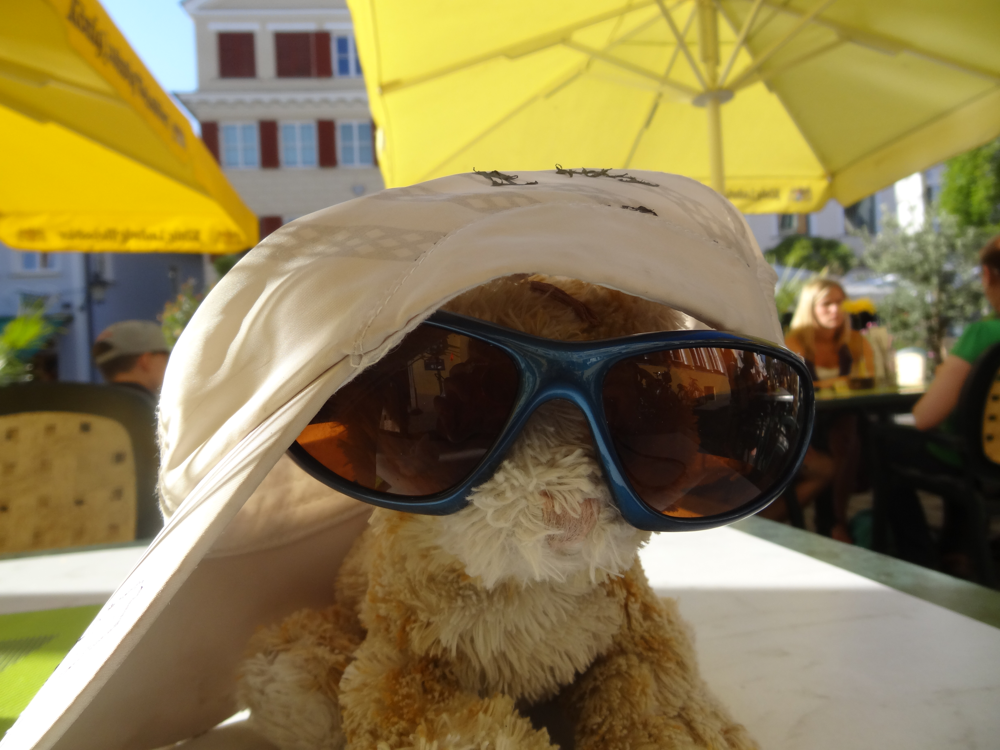

These photos were taken in and around Passau, Germany, including Passau's Old Town,
St. Stephen's Cathedral, LEGOLAND Germany, and some of the bike paths that led us toward Vienna.
A glimpse of Passau, family cycling, and the road that led us toward Vienna.
Read the Journey
Passau and the Road Toward Vienna
Germany is full of beautiful churches, castles, cathedrals, and historic towns.
Passau is one of those places where every street seems to lead to another interesting building, another old square, or another story waiting to be discovered.
It is worth slowing down and taking it all in.
But travel is not only about monuments.
Sometimes the memories that stay with us the longest have nothing to do with famous landmarks.
While exploring old towns, visiting cathedrals, and cycling along the Danube, there was also time for simple moments of curiosity and play.
A miniature world in LEGOLAND, a small train ride, and a child who was far more interested in photographing a teddy bear wearing sunglasses than another historic building.
And honestly, that was part of the adventure too.

It is easy to focus on what guidebooks tell us we should see.
It is harder, and often more rewarding, to see the journey through the eyes of a child.
When your child wants to stop and take a picture of a teddy bear in sunglasses while surrounded by centuries of history, join in. Smile. Take the photo.
The cathedral will still be there.
The moment may not.
Sometimes the best travel memories are not the famous places themselves, but the laughter, curiosity, and shared experiences that happen along the way.